You can try out SpiffWorkflow right now by visiting our demo site at SpiffDemo.org.
BUT WAIT!
There is a lot of information on this page that will help you get the most out of your experience. So please read on!
Video Instructions
You can follow the directions below, or you can watch this short video where we take you step by step through how to use the site.
Visit Spiffdemo & Login
To begin your journey, open your web browser and navigate to the official demo website. On the login screen, you will find the option to “Sign in with Google”. If you do not have a Google account, please contact us and let us know what other sign-on options you would like to use. We can also create an account for you if needed.
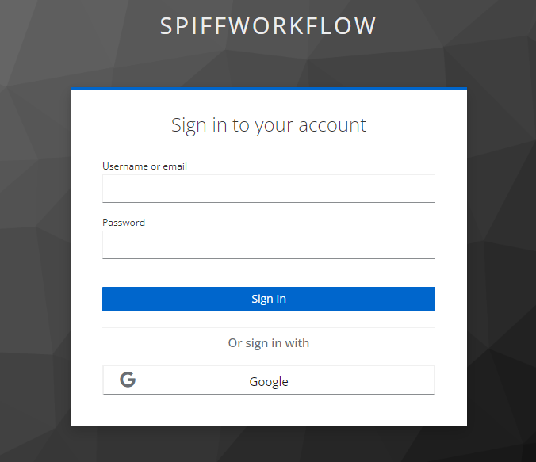
Explore the Home Section
Upon successful login, you will be greeted by our home screen. The home page will be empty at this stage since no processes are assigned to you. Take a moment to familiarize yourself with the layout and available features.
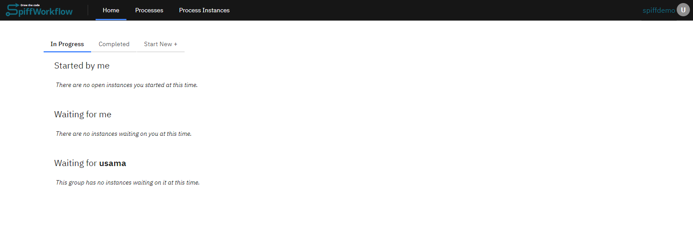
Move to the Process Section
Go to the “Process” section from the top menu. Within the “Process” section, you will find two main sections: “Example” and “Playground.”
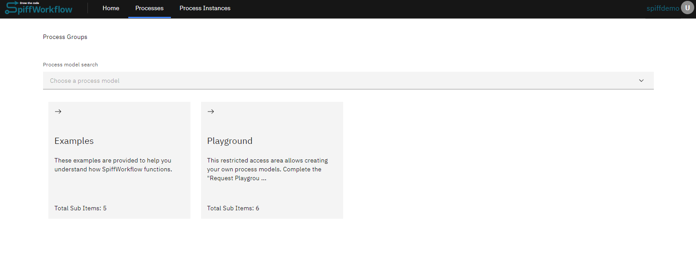
Explore Example Processes
Click on the “Example” option to explore pre-built workflow examples that showcase various functionality and use cases. In the “Example” section, you will find a list of top-level process models and groups. These examples represent complete workflows with predefined steps and tasks.
Select one of the top-level examples, such as “Minimal Example” or “Essential Example” to view the corresponding process model and diagram.
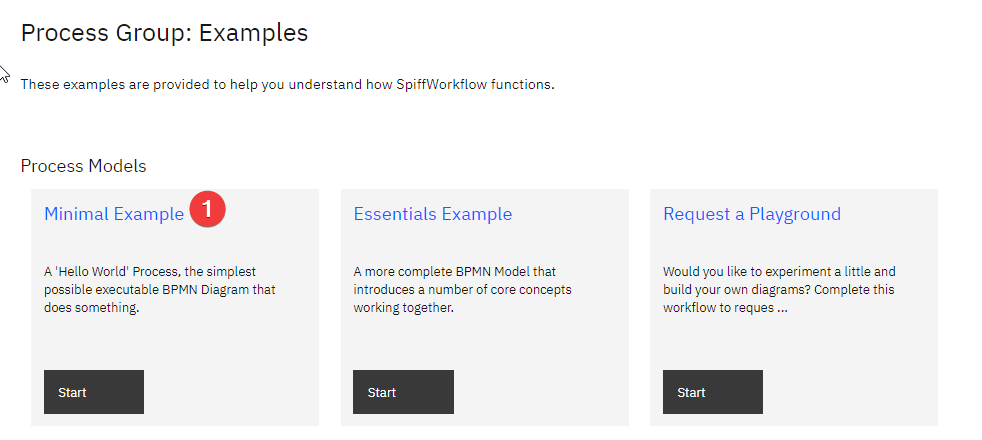
Upon clicking on a process model (such as Minimal Example), a new window will open with details and a list of associated files.
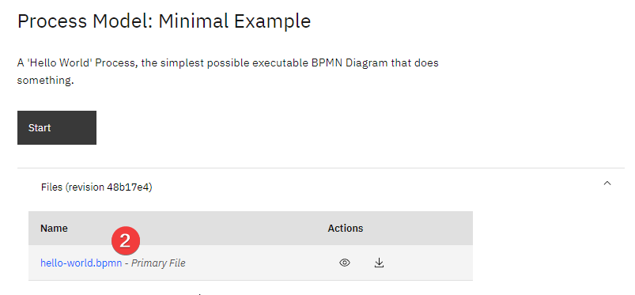
Explore BPMN Editor
If you wish to view and make changes to the process diagram. Open a .bpmn file and you will have a visual diagram representing the workflow. Take a closer look at the diagram and familiarize yourself with the elements, such as start events, tasks, and end events.
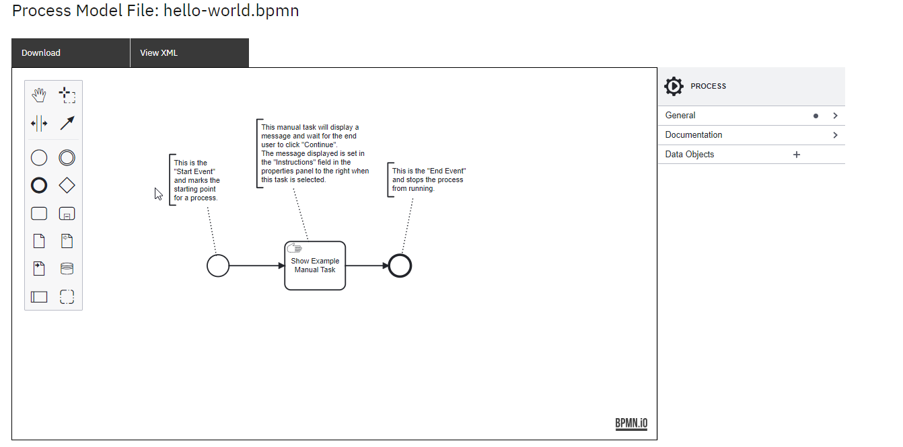
You can access detailed information and properties in the right sidebar by clicking on individual tasks. Make modifications to the diagram by adding or modifying tasks, connecting elements, or updating properties.
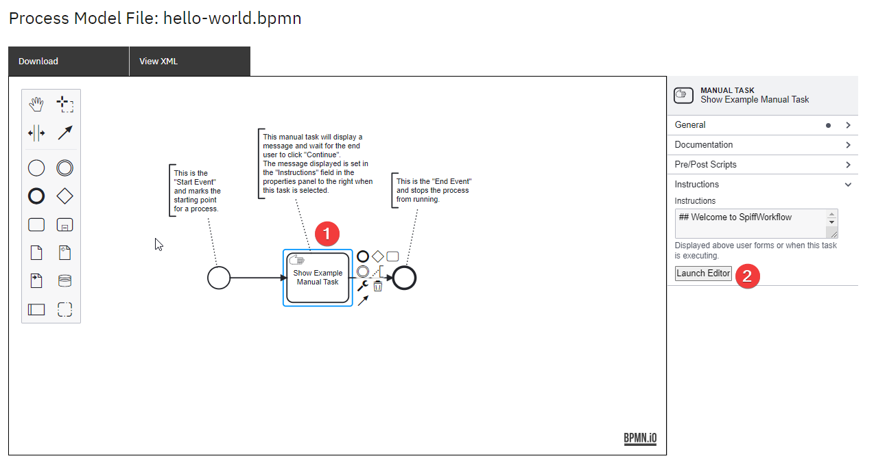
To modify the instructions displayed for manual tasks, navigate to the “Instructions” field. For example, if you wish to update the information in the manual task named “Show Example Manual Task” below, click “Launch Editor.” This action will open the editor, allowing you to change the displayed content.
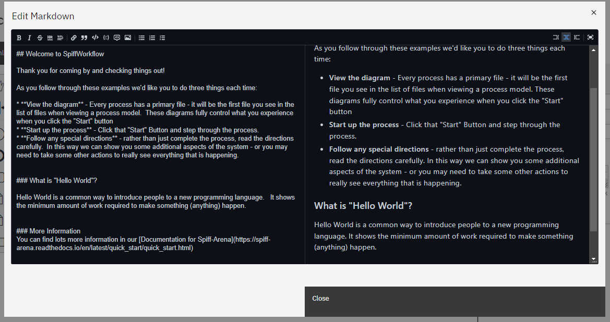
Note: In order to save any changes, you must have an editor role. To acquire this role, you must request access to a playground (see below). Once you have the editor role, you can save your modifications successfully.
Requesting a Playground
To access the editor role and create your own diagrams, start by requesting a playground.
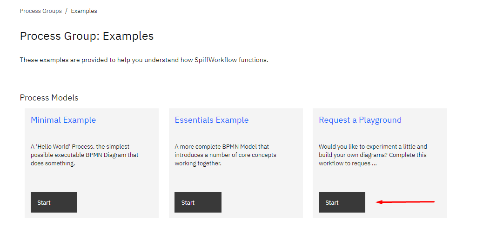
Follow the instructions within the “Request a Playground” process, providing the necessary information. This process will guide you through the steps required to complete the request and grant you access as an editor.
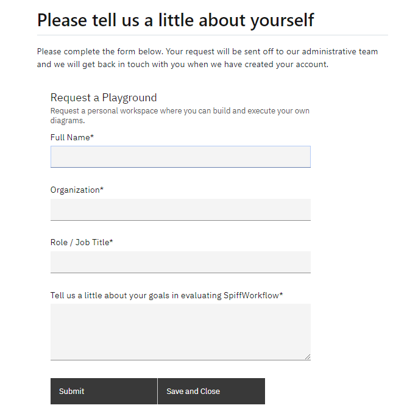
Access the Playground
When your account is set up, select the “Playground” option in the process section, and you will see that you have gained the ability to create and modify your own process models.
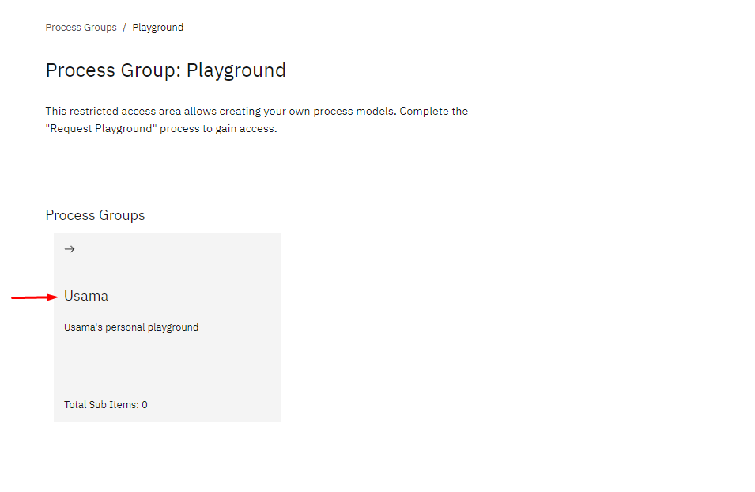
Within the playground, you will find a container assigned to your name. Inside this container, you will have access to multiple tasks and process models. You can utilize this environment to create your own process models and make necessary modifications to the diagrams. This includes adding or modifying tasks, connecting elements, and updating properties. Furthermore, you can save these changes to ensure your progress is preserved.
Explore Additional Diagrams
In addition to the top-level examples, our demo site provides a wide range of additional diagrams and workflows for exploration. To delve deeper into various workflow scenarios, you can navigate through the “Essentials Example” and the other process models under the “Process Groups” section below.
The pre-built process models cover a wealth of information including both basic concepts and more advanced topics, allowing you to discover diverse and intricate workflow scenarios.
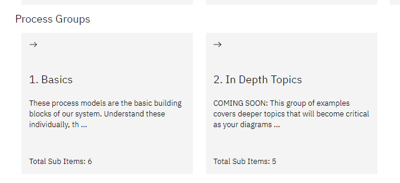
By following these detailed steps, you will gain a solid understanding of SpiffWorkflow and its features. Enjoy exploring, creating, and executing workflows within the platform, and we hope that you will leverage its capabilities to streamline your business processes effectively.